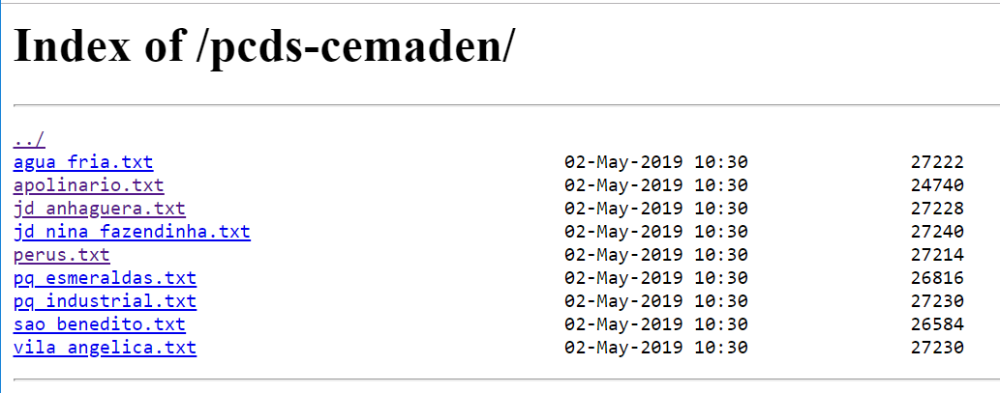
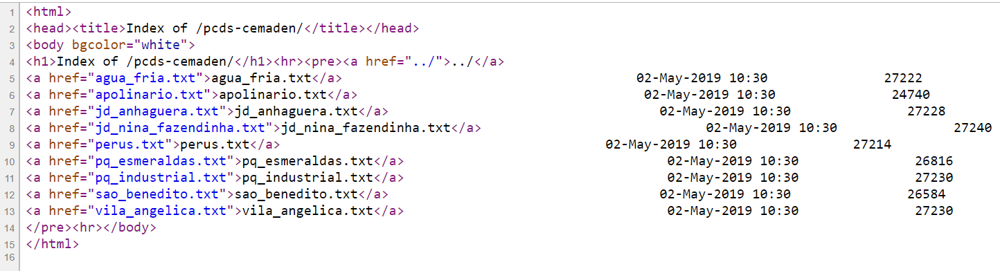
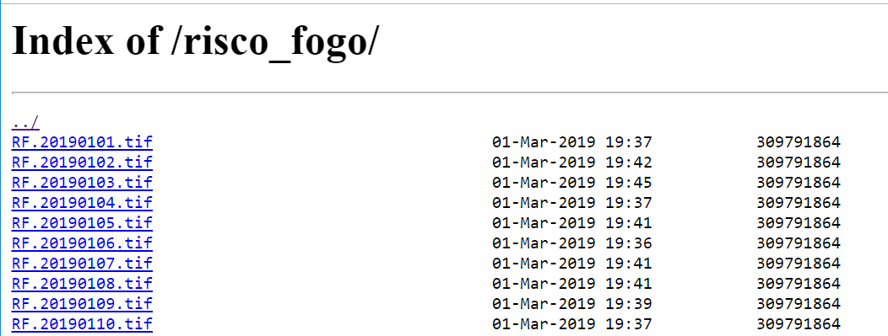
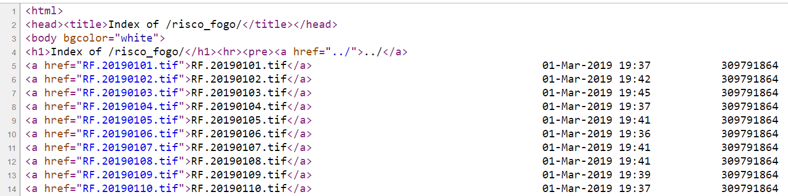

Máscara do Dado Dinâmico
Todo dado dinâmico para ser armazenado e posteriormente acessado pelos modelos de análise tem de ter as propriedades de data, hora e o fuzo horário adotado. Seja na forma de arquivos ou tabelas de banco de dados, tais propriedades devem estar presentes. Para dados dinâmicos na forma de arquivos de serão coletados, caracteres especiais devem ser utilizados na máscara desses arquivos para os números referentes da data e hora.
Para data com ano, mês e dia utilize %YYYY para anos de 4 dígitos ou %YY para anos de 2 dígitos, %MM para mês e %DD para dia. Para data com ano e dia juliano utilize %YYYY para anos de 4 dígitos ou %YY para anos de 2 dígitos e %JJJ para o dia juliano. Para valores de hora utilize %hh para hora, %mm para minutos e %ss para segundos. Caracteres que não mudam podem ser mantidos ou substituídos por * (asterisco). Note que ano, mês e dia ou dia juliano as letras devem ser maiúsculas e para hora, minuto e segundo as letras devem ser minúsculas.
Arquivos que estão compactados na fonte de origem podem estar de duas formas:
- Com a extensão do formato + caracteres da compactação, por exemplo: “radar200805281030.tif.gz”, isto é, a extensão do arquivo a ser descompactado faz parte do próprio arquivo *.gz. Neste caso, pode-se optar por não declarar a extensão “gz” pois a extensão “tif” já é conhecida.
- Extensão oculta do formato + caracteres da compactação, por exemplo: “radar200805281030.gz”. Neste caso a extensão somente será conhecida após descompactar o arquivo. Para tal, deve-se utilizar uma lista das extensões entre parênteses “%( | )%” separadas de uma barra vertical, que para o exemplo seria “%(tif|gz)%”. A máscara completa deve ser “radar%YYYY%MM%DD%hh%mm.%(tif|gz)%.
A seguir exemplos de alguns arquivos a serem lidos pela plataforma.
Arquivos |
Máscara dos arquivos / *comentários |
Hidro.20180525.230500.bin Hidro.20180525.231000.bin Hidro.20180525.231500.bin Hidro.20180525.232000.bin Hidro.20180525.232500.bin ... |
Hidro.%YYYY%MM%DD.%hh%mm%ss.bin *arquivos disponíveis a cada 5 minutos. Note que ano tem 4 dígitos |
Hidro.180525.230500.bin.gz Hidro.180525.231000.bin.gz Hidro.180525.231500.bin.gz Hidro.180525.232000.bin.gz Hidro.180525.232500.bin.gz ... |
Hidro.%YY%MM%DD.%hh%mm%ss.bin *arquivos compactados disponíveis a cada 5 minutos. Note que o ano tem 2 dígitos. Não é necessário informar a extensão “gz” para arquivos compactados. Neste caso, a extensão “bin” é apresentada mesmo sem descompactar o arquivo. |
radar.180525_2305.zip radar.180525_2310.zip radar.180525_2315.zip radar.180525_2320.zip radar.180525_2325.zip ... |
radar.%YY%MM%DD_%hh%mm.%(tif|zip)% *arquivos compactados disponíveis a cada 5 minutos. Note que o ano tem 2 dígitos. Extensão “tif” só será conhecida após descompactar o arquivo ‘zip”. |
A.180525_12_deterA_inpe.zip A.180526_12_deterB_inpe.zip A.180527_12_deterA_inpe.zip A.180528_12_deterB_inpe.zip A.180529_12_deterC_inpe.zip ... |
A.%YY%MM%DD_%hh*.%(shp|zip)% *arquivos compactados disponíveis a cada dia, sempre as 12h. Note que o ano tem 2 dígitos. Extensão “shp” só será conhecida após descompactar o arquivo ‘zip”. O caractere “*” substitui a sequência “_deterA_inpe”, “_deterB_inpe” ou “_deterC_inpe” em todos arquivos |
NOTA: Somente caracteres numéricos são válidos. Use somente números para indicar o mês. Não serão reconhecidos valores como “jan”, “fev” ou “mar” para “janeiro”, “fevereiro” ou “março”. Para os valores de horas, somente valores entre 0 e 24 são válidos.
Para arquivos de dados dinâmicos matriciais que terão acesso direto (item 2.4.5), estes não podem estar compactados e somente arquivos compatíveis com a biblioteca GDAL, como GeoTiff e HDF5 devem estar disponíveis.
NOTA: O valor do Fuso Horário para arquivos (vetoriais ou matriciais) deve ser informado na própria interface do arquivo a ser lido na aba “Parâmetros” e na aba “Armazenar”.
NOTA: A máscara no nome dos diretórios também é permitida. Alguns dados podem estar organizados em pastas referentes a cada mês de cada ano. Como exemplo, para dados em uma pasta correspondente ao ano “2015” e outra para o mês “02” como “radar_SR/2015/02/radar201809240830.tif” utilize “radar_SR/%YYYY/%MM/radar%YYYY%MM%DD%hh%mm.tif”
Arquivos em servidores tipo HTTP ou HTTPS devem ter formatação simples em código de hipertexto (HTML). Veja por exemplo, algumas PCD´s na forma de arquivos texto ASCII e o correspondente código HTML desses mesmos arquivos.


Outro exemplo de arquivos TIFF de um dado matricial dinâmico e o correspondente código HTML desses arquivos.

